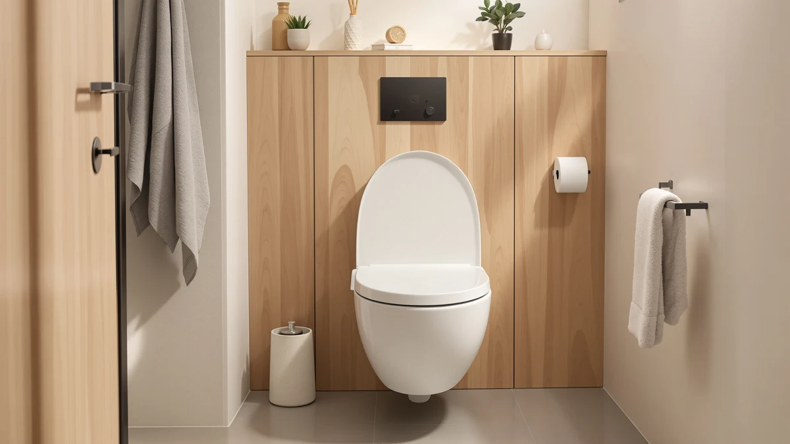

6 Best RV Toilet Seats for Campers and Trailers (2026)
Prices and picks verified as of August 2026. Independent, reader-supported reviews.


Quick Answer
For most RVs with a standard elongated bowl, the best RV toilet seats are lightweight, slow-close models that hold their mounting bolts tight through highway vibration. The KOHLER Brevia Slow Close Elongated pairs a secure hinge with the lowest weight and price in this guide, and it fits the same bowl pattern used in most full-size RV bathrooms.
Our pick: KOHLER Brevia Slow Close Elongated, $31.44 Check Price on Amazon
Bottom line: our top pick is the KOHLER Brevia Slow Close Elongated Toilet Seat at $31.44. The best budget option is the Bemis 1500EC Lift-Off Wood Elongated Toilet Seat at $16.99.
Things to Know Before You Buy
- Measure your RV bowl first. Most full-size RV toilets use the same elongated or round bowl pattern as a house, but compact cassette and low-profile units need a model-specific seat, not one of the standard elongated seats covered here.
- Road vibration loosens hinge bolts faster than normal household use, so a seat with quick-release or ReadyLatch hardware, which you can snug by hand without tools, holds up better on the road.
- Wood seats look nicer but react to the humidity swings inside a closed-up RV more than plastic does. If your rig sits parked for weeks between trips, plastic is the safer material.
- Weight matters more in an RV than in a house. Every extra pound works against your rig's payload, so the lightest usable seat is often worth choosing over a heavier "premium" model.
- Prices for RV toilet seats in this guide run from under $20 to over $70, and the extra cost mostly buys reinforced hinges or added height, not a fundamentally different seat.
The best RV toilet seats are not a special category of seat at all. They are standard elongated or round models that happen to fit the full-size toilets installed in larger campers, trailers, and motorhomes. Most Class A motorhomes, fifth wheels, and toy haulers use residential-style toilets from brands like Dometic, Thetford, or American Standard, and those bowls take the same seats you would buy for a house bathroom. Smaller travel trailers and van conversions are a different story: their compact cassette toilets need a seat molded to that exact model, not a general elongated seat.
We compared eight elongated seats built to the standard American toilet pattern, looking at hinge type, material, listed weight, and what verified owners report after months of use on the road. For most rigs with a full-size toilet, the KOHLER Brevia Slow Close Elongated is the one to buy. It is light, its slow-close hinge holds up to routine use, and at $31.44 it costs less than most of the alternatives here.
This guide sticks to seats that fit standard elongated and round RV bowls. It does not cover the proprietary seats sold for compact cassette toilets, which you should buy directly from the toilet manufacturer instead. If your rig uses a round bowl rather than an elongated one, check our round toilet seat guide before ordering any of the picks below, and see our installation guide if you have never swapped a seat in a moving vehicle before, since the process differs slightly from a stationary bathroom.
Why You Should Trust Us
Best Toilet Seats is a small editorial site focused on toilet seats and the bathrooms they go in, and RV bathrooms come up often because the fit and durability requirements differ from a house. We have covered elongated seats and round seats in depth elsewhere on the site, and this guide applies that same research to a seat that has to survive highway vibration and the humidity swings of a closed-up RV bathroom.
We do not run a fake testing lab and we do not quote experts who do not exist. What we do is read the product specifications, the installation details relevant to RV use, and the full range of verified owner reviews, and we write down the real complaints rather than the marketing copy. When a seat has a drawback that matters for RV use, such as a wood build in a humid rig or a wobble under vibration, it goes in the review. We earn a commission if you buy through our links, which never changes which products we recommend or what we say about them.
How We Picked
We started with fit. Every seat here is built to the standard elongated or round bowl pattern used by the full-size residential toilets found in larger RVs, fifth wheels, and toy haulers. We excluded seats designed only for a specific cassette toilet model, since those are sold directly by the toilet manufacturer and a universal seat will not bolt on correctly.
From there we favored lighter seats, since every extra pound works against an RV's payload, and we gave weight to hinge hardware you can tighten or remove without tools, because RV owners need to check and reseat mounting bolts more often than a homeowner does. We kept a mix of materials and prices, from a $16.99 wood budget pick to a $71.63 premium option, so this roundup of the best RV toilet seats works whether you want the cheapest seat that will hold up or the sturdiest one available.
How We Compared
For each seat we compared the hinge mechanism against the manufacturer's own description, since "slow close" and "soft close" get used loosely across listings and do not always mean the same two-to-three-second lowering action. We checked whether the hinges and lid detach for cleaning, which matters more in a cramped RV bathroom than a full-size house one, and we noted the listed weight of each seat where the manufacturer provides it.
We also read through the verified reviews for language specific to RV, camper, or trailer use: reports of a seat loosening on the road, warping in a humid rig, or fitting (or not fitting) a particular toilet brand. Reviewers consistently note that ReadyLatch and lift-off hinge styles are easier to manage in tight RV bathrooms than seats with fixed hinges, so that became one of our comparison points. Where a listing did not publish a rating or review count, we say so rather than guess at a number.
Our Picks

KOHLER Brevia Slow Close Elongated
What we like
- Slow-close hinge with no slam, even with highway vibration
- Among the lightest seats in this guide, easy on payload
- Standard elongated fit works with most residential-style RV toilets
Flaws but not dealbreakers
- Plastic construction feels basic next to the premium picks here
- No lift-off hinge, so cleaning around the mounts takes a bit more effort
| Material | Plastic / wood |
| Size | Elongated |
The Brevia earns the top spot in this guide because it does the two things an RV toilet seat needs to do without adding weight or cost. Owners in the 10,188 verified reviews consistently note that the slow-close hinge holds up over years of regular use, lowering the lid over two to three seconds instead of letting it drop and slam, a detail that matters more on the road, where vibration works ordinary hinges loose faster than it would in a stationary house. At 4.4 out of 5 stars, it holds a consistent rating across a review base large enough to catch problems that a newer product's smaller review count would miss.
It is also one of the lightest seats in this comparison, which counts for something when every pound works against your rig's payload. At $31.44 it undercuts most of the other elongated seats here while still fitting the same standard bowl pattern used by full-size RV toilets. The tradeoff is a fixed hinge rather than a lift-off design, so cleaning around the mounting bolts takes a little more work than with the Bemis or KOHLER Cachet below. For a straightforward elongated seat that will not loosen on the highway, this is the one we would buy first.

Bemis 1500EC Lift-Off Wood Elongated
What we like
- Lowest price in this guide at $16.99
- Lift-off hinges make cleaning around the mounts simple
- 40,583 reviews give it the largest verified track record here
Flaws but not dealbreakers
- Real wood can expand or contract with the humidity swings of a closed-up RV
- Heavier than the plastic seats in this guide, a small hit to payload
| Material | Plastic / wood |
| Size | Elongated |
At $16.99, the Bemis 1500EC is the cheapest seat in this comparison, and it does not cut the corner that matters most: the hinges lift off without tools, so the crevice where grime collects around the mounting bolts is no longer sealed shut. That detail is worth more in an RV bathroom, where counter space and cleaning access are both tighter than in a house. Its 40,583 verified reviews, the largest count of any product here, give it the deepest track record for a seat used across a wide range of climates and toilet models.
Real wood does react to conditions that plastic ignores. A rig that sits closed up through a humid summer or a damp coastal trip can see a wood seat swell slightly at the hinge, so owners who travel through consistently humid regions should expect to check the fit occasionally. It is also somewhat heavier than the plastic seats in this guide, which is a minor consideration against an RV's payload rather than a real drawback. For the price, it remains the easiest seat here to justify for a rig on a tight budget.

KOHLER Hyten Elevated Soft Close
What we like
- Elevated design adds sitting height without a separate riser
- Soft-close hinge lowers gently, no slam
- Highest rating in this guide at 4.6/5
Flaws but not dealbreakers
- The added height may not clear a very low RV bathroom door or lid
- Priced above the wood and standard plastic picks here
| Material | Plastic / wood |
| Size | Elongated |
The Hyten solves a problem that comes up often in RV bathrooms: the toilet itself sits lower than a standard house model, and getting up and down in a tight stall is harder than it needs to be. Its elevated design adds sitting height directly, without bolting on a separate riser that would eat into an already small floor plan. Owners in the 8,655 verified reviews back this up, and it carries the highest rating of any seat in this guide at 4.6 out of 5.
The soft-close hinge behaves the same way as the other picks here, lowering the lid gently rather than dropping it, which matters just as much on a taller seat as a standard one. The tradeoff is clearance: the extra height that helps with mobility can also bring the lid closer to a low bathroom door or overhead cabinet in a compact RV, so measure before you buy. At $58.95 it costs nearly twice the top pick, a fair price for the added height if you need it, but not worth paying if you don't.

KOHLER Cachet ReadyLatch Elongated Toilet
What we like
- ReadyLatch hardware detaches and reattaches without tools
- 41,303 reviews, the largest verified sample in this guide
- Consistent 4.4/5 rating across that large review base
Flaws but not dealbreakers
- Costs more than the Brevia for a broadly similar experience
- The ReadyLatch mechanism has more moving parts than a simple fixed hinge
| Material | Plastic / wood |
| Size | Elongated |
The Cachet's ReadyLatch hardware is the feature that makes it worth a look for RV use specifically. Instead of reaching under the bowl with a wrench, you release the latch and lift the seat straight off, then set it back down and snap it into place. For a seat you may need to remove for deep cleaning or re-tighten after a long stretch of highway driving, that difference saves real time. Its 41,303 verified reviews are the largest sample of any product in this guide, and the 4.4 out of 5 rating holds steady across that volume.
At $48.99 it costs more than the Brevia for what is, day to day, a similar seat once installed. The extra money buys convenience at removal and reinstallation rather than a noticeably different sit or close. The ReadyLatch mechanism also has more moving parts than a plain fixed hinge, which is a fair tradeoff for the convenience but something to keep in mind if you prefer the fewest parts possible on something bolted into a moving vehicle.

BEMIS 7800TDG Commercial Heavy Duty
What we like
- Commercial-grade build designed for higher daily use than a standard residential seat
- 4.6/5 rating across 28,625 reviews
- Heavier-duty hinges resist the wear that comes with frequent trips
Flaws but not dealbreakers
- Heavier than the plastic-only picks here, a small tradeoff against payload
- Overbuilt for a rig that only comes out a few weekends a year
| Material | Plastic / wood |
| Size | Elongated |
Bemis built the 7800TDG for commercial settings that see far more daily traffic than a house bathroom, which happens to describe full-time RV living or a rig you rent out between your own trips more accurately than a standard residential seat does. The 28,625 verified reviews back up that durability claim with a 4.6 out of 5 rating, one of the two highest in this guide, and owners consistently point to the hinges holding up well past the point where a lighter-duty seat starts to wobble.
At $48.99 it costs the same as the KOHLER Cachet above, but the money buys sturdier construction rather than removal convenience. That extra material does add some weight compared with the plastic-only picks here, a minor consideration against payload rather than a real problem, and the heavier-duty build is genuinely more than a rig used only occasionally needs. For a full-timer or a rental fleet where the seat gets used every day by different people, it is the seat built for that job.

Rayport American Standard Elongated Toilet
What we like
- Matches the American Standard bowl profile specifically, rather than a generic universal fit
- Priced below the KOHLER Cachet and Bemis commercial picks
- Elongated shape suits the same full-size RV toilets as the rest of this guide
Flaws but not dealbreakers
- No published rating or review count yet, so there is less owner feedback to draw on than the top picks
- Worth confirming bolt spacing against your specific toilet model before ordering
| Material | Plastic / wood |
| Size | — |
Some RVs, particularly larger fifth wheels and toy haulers, are fitted with toilets built to the American Standard bowl profile rather than a generic elongated shape, and mounting bolt spacing can differ just enough between brands to matter. The Rayport is built specifically to that profile, which makes it worth checking if you know your rig uses an American Standard-pattern toilet and want the closest possible match rather than a universal-fit seat.
At $39.80 it sits between the budget wood pick and the mid-tier plastic seats in this guide. Its listing does not yet carry a published rating or review count, so there is less verified owner feedback behind it than the other seats here, and we would lean toward the Brevia or Cachet above if broad review history matters more to you than an exact bowl match. If your toilet is confirmed American Standard, this is the more precise fit of the two.

KOHLER 4636-RL-0 Cachet ReadyLatch Elongated
What we like
- Same tool-free ReadyLatch hardware as the Cachet listing above
- Elongated fit matches the standard RV bowl pattern used throughout this guide
- A useful backup when the other Cachet listing sells out
Flaws but not dealbreakers
- Pricing was not listed at the time of publishing, so confirm current cost before ordering
- No review count published separately from the sibling listing above
| Material | Plastic / wood |
| Size | Elongated |
This is a second listing for the same Cachet ReadyLatch design covered earlier in this guide, and it is worth knowing about mainly as a backup. Amazon sellers frequently list the same KOHLER seat under separate ASINs for different finishes or bundle configurations, and stock on one can run out while the other stays available. If you specifically want the tool-free ReadyLatch hinge and the primary Cachet listing is unavailable or priced higher, this is the alternative to check.
At the time of publishing, this listing did not carry a price or a separate review count, which is why we recommend confirming both before you order rather than assuming they match the sibling product above. Treat it as a fallback option behind the Cachet ReadyLatch listing earlier in this guide, not a first choice on its own.

Bath Royale Elongated Toilet Seat
What we like
- Reinforced hinge design aimed at extra durability
- Elongated fit matches the standard RV bowl pattern used throughout this guide
- The highest-spec build in this comparison for buyers prioritizing sturdiness over price
Flaws but not dealbreakers
- The most expensive seat in this guide at $71.63
- No published rating or review count to weigh against the cheaper options here
| Material | Plastic / wood |
| Size | Elongated |
Bath Royale positions this seat at the top of its lineup with reinforced hinges built to resist the loosening and wobble that cheaper hardware develops over time, which is exactly the failure mode RV owners deal with more than homeowners because of constant road vibration. At $71.63 it costs more than double the top pick in this guide, and that premium buys hinge hardware built for a longer service life rather than any additional feature you would notice day to day.
Because this listing does not yet carry a published rating or review count, we cannot weigh owner experience against the better-reviewed picks above the way we can for the rest of this guide. For most RVs, the Brevia or KOHLER Cachet deliver comparable performance for less money. This one makes sense specifically for owners who want the sturdiest hinge available and are willing to pay for it without a large review history to lean on yet.
Quick Comparison
| Product | Material | Price | Rating | Best for | Get it |
|---|---|---|---|---|---|
| KOHLER Brevia Slow Close Elongated | Plastic / wood | $31.44 | 4.4 | Most RV bathrooms, best overall value | View on Amazon → |
| Bemis 1500EC Lift-Off Wood Elongated | Plastic / wood | $16.99 | 4.4 | Tightest budget, easy-clean lift-off hinge | View on Amazon → |
| KOHLER Hyten Elevated Soft Close | Plastic / wood | $58.95 | 4.6 | Extra sitting height, seniors and mobility needs | View on Amazon → |
| KOHLER Cachet ReadyLatch Elongated Toilet | Plastic / wood | $48.99 | 4.4 | Tool-free removal for frequent cleaning | View on Amazon → |
| BEMIS 7800TDG Commercial Heavy Duty | Plastic / wood | $48.99 | 4.6 | Full-time RVers and shared or rental rigs | View on Amazon → |
| Rayport American Standard Elongated Toilet | Plastic / wood | $39.80 | 4 | American Standard-pattern RV toilets | View on Amazon → |
| KOHLER 4636-RL-0 Cachet ReadyLatch Elongated | Plastic / wood | 4 | Backup option if the Cachet listing above sells out | View on Amazon → | |
| Bath Royale Elongated Toilet Seat | Plastic / wood | $71.63 | 4 | Buyers who want the sturdiest hinges, price no object | View on Amazon → |
Will a standard elongated toilet seat fit my RV toilet?
It depends on the toilet installed in your rig.
What is the difference between an RV toilet seat and a cassette toilet seat?
A cassette toilet seat is molded to match a specific compact unit, usually a Thetford or Dometic model with a narrower bowl and a shorter footprint than a household toilet.
The Competition
Frequently Asked Questions
Will a standard elongated toilet seat fit my RV toilet?
It depends on the toilet installed in your rig. Larger fifth wheels, toy haulers, and many Class A motorhomes use full-size residential toilets from brands like Dometic, Thetford, or American Standard, and those bowls take the same standard elongated or round seats sold for houses. Smaller travel trailers and van conversions often use compact cassette or low-profile toilets with proprietary seat shapes, so measure your bowl and check the mounting bolt spacing before ordering any of the seats above.
What is the difference between an RV toilet seat and a cassette toilet seat?
A cassette toilet seat is molded to match a specific compact unit, usually a Thetford or Dometic model with a narrower bowl and a shorter footprint than a household toilet. An RV toilet seat, as covered in this guide, refers to a standard elongated or round seat used on the full-size residential toilets found in larger RVs. Cassette seats are almost always sold as OEM replacement parts for one model, while the seats here fit any bowl built to the standard American toilet pattern.
How do I keep an RV toilet seat from loosening while driving?
Road vibration works mounting bolts loose faster than normal household use does, so check the hinge bolts every few trips and snug them by hand rather than over-tightening with a wrench, which can crack the bowl flange. Seats with quick-release or ReadyLatch-style hardware, like the KOHLER Cachet above, make this easier because you can pop the seat off, clean the threads, and reseat it without tools. See our installation guide if you have not swapped a seat before. A seat that already wobbles at installation will only get worse once you are on the highway, so test the fit before you leave the driveway.